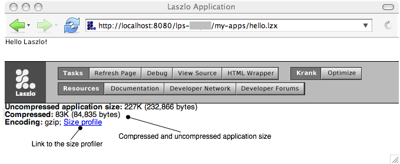

In this chapter we'll look at various ways to detect and address sources of poor performance. You may also want to investigate the OpenLaszlo Wiki, where developers discuss advanced techniques, including unofficial and unsupported tools such as the call profiler.
TODO: size profiler stuff
This chapter discusses ways to measure the performance of your Laszlo client code and gives some tips for more efficient coding.
Be sure also to see Chapter 51, Debugging, which includes explanations of many useful techniques, such as tracing, backtracing, memory leak detection and object inspection, for finding performance problems.
Simple timing measurements can be made using (new
Date).getTime(), which will return a millisecond time. You
can use Debug.debug or Debug.log to output
timing data. Here is a simple framework illustrating how you can use
this to measure the cost of certain operations. A more complete
framework is available by including utils/performance.
Example 43.1. Measurement Framework
<canvas width="100%" height="150" debug="true">
<script>
var trials = 30;
function measure (target, iterations, description, trials, empty) {
// Default arguments
switch (arguments.length) {
case 0:
Debug.debug("No measurement target");
return;
case 1:
iterations = 500;
case 2:
description = null;
case 3:
trials = 10;
case 4:
empty = function () {
for (var i = 0; i < iterations; ) i++;
}
}
// Compute overhead
var overhead = 0;
var total = 0;
for (var j = 0; j < trials; j++) {
var start = (new Date).getTime();
empty();
var end = (new Date).getTime();
overhead += end - start;
// Measure target
var start = (new Date).getTime();
target();
var end = (new Date).getTime();
total += end - start;
}
var usPerOp = Math.round((total-overhead)*1000/(trials*iterations));
// Report results
if (description != null) {
Debug.debug("%w: %d\xB5s", description, usPerOp);
}
return usPerOp;
}
// What we want to measure
var iterations = 100;
function stringConcatenation () {
for (var i = 0; i < iterations; i++) {
"foo" + "bar";
}
}
// Measure it
measure(stringConcatenation, iterations, "String concatenation");
</script>
</canvas>
Because Date.getTime is based on the real time clock,
measurements using it can be deceiving: the runtime may choose to
execute maintenance tasks during your measurement period (for
instance, garbage collection) and the operating system may share the
processor with other applications during your measurement period. The
utils/performance library uses a slightly more
sophisticated meter that accumulates both a mean time, standard
deviation, and min and max times. In the examples below, the meters
are presented as: mean ±std. dev.
[minimum..maximum]/trials
You will see that in both the example framework and the performance library that we accumulate statistics in two loops: a short-term loop to ameliorate the overhead of getting the time, and a long-term loop to minimize the perturbation due to background or other processes.
Be sure to do your testing on your most difficult target. Clients with the Flash 6 player installed will be slower than those with the Flash 7 player installed. Macintosh clients will, in general, be slower than Windows clients. Most of the advice in this chapter holds across all players and platforms, but by viewing the examples on the particular client of interest, you can see exactly how important the advice is.
Like most programming languages, JavaScript often can express the same algorithm in a number of different ways. Below are some tips on choosing the more efficient of those ways.
Local variables are faster to access than global variables, so global
variables should only be used when necessary. In particular, watch
out for erroneously writing for (i in ...) when you
really mean for (var i in ...); similarly, for (i =
0; i < ...; i++) will be less efficient than for (var
i = 0; i < ...; i++). [In addition you are liable to
clobber an important global variable if you forget to use the
var declaration in a for loop.]
The example below uses the performance Measurement utility to
illustrate the difference between incrementing a global variable and a
local variable.
Example 43.2. Globals vs. Locals
<canvas height="150" width="100%">
<include href="utils/performance" />
<script>
var iterations = Measurement.defaultIterations;
function empty () {
for (var i = 0; i < iterations; i++) {}
}
var j = 0;
function globalReference () {
for (var i = 0; i < iterations; i++) {j++}
}
function localReference() {
var k = 0;
for (var i = 0; i < iterations; i++) {k++}
}
(new Measurement({'Global reference': globalReference,
'Local reference': localReference,
'empty': empty})).run();
</script>
</canvas>
If you need to access a global reference many times that you know will not change, create a local reference and use that instead.
Example 43.3. Caching globals
<canvas height="150" width="100%">
<include href="utils/performance" />
<script>
var iterations = Measurement.defaultIterations;
function empty () {
for (var i = 0; i < iterations; i++) {}
}
var j = 0;
function globalReference () {
for (var i = 0; i < iterations; i++) {j++}
}
function localReference() {
var k = 0;
for (var i = 0; i < iterations; i++) {k++}
}
(new Measurement({'Global reference': globalReference,
'Local reference': localReference,
'empty': empty})).run();
</script>
</canvas>
It's expensive to do a lot of a.b.c.d.e.f references, compared to just one global.a reference, especially if the JavaScript code repeats the path again and again. Avoid code that repeats paths like "foo.bar.baz.x = 1; foo.bar.baz.y = 2;". Scripting languages like JavaScript don't have smart optimizing compilers like C++, so if you have a lot of repeated references to the same path, it does exactly what you tell it to again and again and doesn't optimize the code. So it's a good practice to load any deep path references into temporary variables if you're going to reference them more than once in the same function. Temporary local variables are cheap (it's a stack based VM), so it's much better to put something in a local than repeatedly dereferencing the same path again and again.
Use short local paths when you can to wire up references between close relatives (parent/child/sibling), but it's ok to use global ids (with long distinct descriptive names like gFunnyLookingWidget) when you need to reference an important widget from elsewhere in the application. It's worth using global ids when it makes code less brittle. There's a trade-off between making the code that references the widget dependent on the relative path, and using global ids for unique important objects, but as long as you give the global id a good name, it's ok to use a global id since it makes it a lot easier to rearrange the layout of the user interface in ways that would break the paths (and then you don't have to come up with names for all the uninteresting intermediate views).
It's worth judiciously using global ids to avoid having to scramble all over the program chasing down and patching up relative paths, whenever you change the position of a widget in the view hierarchy (which can be often, when the GUI is in flux).
Don't use global ids in class definitions or sub-objects of classes, because all instances of that class will end up trying to use the same conflicting id. A good middle ground is to give the top level instance of a class a global id if necessary (where the object is instantiated, not in the class definition), and have the class declare relative shortcuts into deep parts of its internal structure that need to be referenced from other parts of the code, by putting attributes on the class like happycheckbox="$once{this.toppanel.emotioneditor.moodcheckboxes.happyche ckbox}". Then objects outside can use the shortcut without knowing the internal structure of the class, and objects deeply nested inside the class can also go "classroot.happycheckbox" to get the checkbox independent of its position in the hierarchy, instead of "parent.parent.parent.parent.toppanel.emotioneditor.moodcheckboxes.happy checkbox". Then if you rearrange your class's view hierarchy, you only have to change the long relative path reference in one place (the $once attribute of the class lexically containing the view).
For an array A, A.push(b) is more expensive
than A[A.length] = b, which in turn is more expensive
than A[i] = b (i.e., if you already had the current
length of the array in a variable).
Allocating an array in advance, when you know how many elements it will eventually hold, makes no difference on existing runtime platforms, because arrays are just objects that maintain a length field.
Note that if you do not need to know how many elements are in the array, using an object can be slightly more efficient, because it does not have to maintain the length field.
The example below illustrates the various ways of adding elements to an array.
Example 43.4. Adding elements to an array
<canvas height="150" width="100%">
<include href="utils/performance" />
<script>
var iterations = Measurement.defaultIterations;
var textIndexes={};
for (var i = 0; i < iterations; i++) {
textIndexes[i] = i.toString();
}
function empty () {
var testArray = [];
for (var j in textIndexes ) {
;
}
}
function measurePush () {
var testArray = [];
for (var j in textIndexes ) {
testArray.push(j);
}
}
function measureSetAtLength () {
var testArray = [];
for (var j in textIndexes) {
testArray[testArray.length] = j;
}
}
function measureSetAtIndex () {
var testArray = [];
for (var j in textIndexes) {
testArray[j] = j;
}
}
function measureSetAtIndexPreallocated () {
var testArray = new Array(iterations);
for (var j in textIndexes) {
testArray[j] = j;
}
}
function measureObjectSetAtIndex () {
var testObject = {};
for (var j in textIndexes) {
testObject[j] = j;
}
}
(new Measurement({'Array.push': measurePush,
'Array[Array.length] =': measureSetAtLength,
'Array[index] =': measureSetAtIndex,
'Array[index] = (preallocated)':
measureSetAtIndexPreallocated,
'Object[key] =': measureObjectSetAtIndex,
'empty': empty})).run();
</script>
</canvas>
In older players, while loops are slightly more efficient than for ... in loops which are slightly more efficient than for loops. The difference is not enough that you should contort your code, but if any will work equally well, you should choose accordingly.
Example 43.5. Iterating with for, for in, or while
<canvas height="150" width="100%">
<include href="utils/performance" />
<script>
var iterations = Measurement.defaultIterations;
var testIndexes={};
for (var i = 0; i < iterations; i++) {
testIndexes[i] = i.toString();
}
function empty () {
}
function measureFor () {
for (var j = 0; j < iterations; j++ ) {
testIndexes[j];
}
}
function measureForIn () {
for (var j in testIndexes ) {
testIndexes[j];
}
}
function measureWhile () {
var j = 0;
while (j < iterations) {
testIndexes[j++];
}
}
(new Measurement({'for': measureFor,
'for in': measureForIn,
'while': measureWhile,
'empty': empty})).run();
</script>
</canvas>
Using a cascade of if statements is slightly more efficient that using
the equivalent logical operators. This is a bug that will be fixed in
a future release, so you should not contort your code unless
absolutely necessary.
FIXME: Is this really a bug? What about switch — is this faster?
Example 43.6. Conditionals vs. logical operators
<canvas height="150" width="100%">
<include href="utils/performance" />
<script>
var iterations = Measurement.defaultIterations;
var a = false;
var b = true;
var c = true;
function empty () {
for (var i = 0; i < iterations; i++) {
if (a == false) {};
}
}
function measureLogicalAnd () {
for (var i = 0; i < iterations; i++) {
if (a && b && c) {}
}
}
function measureIfProduct () {
for (var i = 0; i < iterations; i++) {
if (a) {
if (b) {
if (c) {}
}
}
}
}
var d = true;
var e = false;
var f = false;
function measureLogicalOr () {
for (var i = 0; i < iterations; i++) {
if (d || e || f) {}
}
}
function measureIfSum () {
for (var i = 0; i < iterations; i++) {
if (c) {}
else if(d) {}
else if (e) {}
}
}
(new Measurement({'Logical And': measureLogicalAnd,
'If Product': measureIfProduct,
'Logical OR': measureLogicalOr,
'If Sum': measureIfSum,
'empty': empty})).run();
</script>
</canvas>
The use of with does not appear to affect performance, so it is a stylistic choice.
FIXME: Tucker, is this true?
Example 43.7. With (this) vx. this.
<canvas height="150" width="100%">
<include href="utils/performance" />
<script>
var iterations = Measurement.defaultIterations;
var testObj = {a: 1, b: 2, c: 3, d: 4, e: 5, f: 6};
function e () {
return 0;
}
function empty () {
for (var i = 0; i < iterations; i++)
e.call(testObj);
}
function withThis () {
with (this) {return a + b + c + d + e + f};
}
function measureWithThis () {
for (var i = 0; i < iterations; i++)
withThis.call(testObj);
}
function thisDot () {
return this.a + this.b + this.c + this.d + this.e + this.f;
}
function measureThisDot () {
for (var i = 0; i < iterations; i++)
thisDot.call(testObj);
}
(new Measurement({'with (this)': measureWithThis,
'this.': measureThisDot,
'empty': empty})).run();
</script>
</canvas>
The cost of a function call is about equivalent to three assignment statements, so modularizing your code using function calls is not going to create a big performance penalty. Each argument passed to a function call is about equivalent to an additional assignment.
Example 43.8. The cost of a function call
<canvas height="200" width="100%">
<include href="utils/performance" />
<script>
var iterations = Measurement.defaultIterations;
var x;
function empty () {
for (var i = 0; i < iterations; i++)
;
}
function measureAssignment () {
for (var i = 0; i < iterations; i++)
x = 0;
}
function eff () {
return 0;
}
function measureFunctionCall () {
for (var i = 0; i < iterations; i++)
eff();
}
function gee (a) {
return 0;
}
function measureFunctionCallWithOneParameter () {
for (var i = 0; i < iterations; i++)
gee(1);
}
function ache (a, b) {
return 0;
}
function measureFunctionCallWithTwoParameters () {
for (var i = 0; i < iterations; i++)
ache(1, 2);
}
function eye (a, b, c) {
return 0;
}
function measureFunctionCallWithThreeParameters () {
for (var i = 0; i < iterations; i++)
eye(1,2,3);
}
function jay (a, b, c, d) {
return 0;
}
function measureFunctionCallWithFourParameters () {
for (var i = 0; i < iterations; i++)
jay(1,2,3,4);
}
function MyObj () {}
MyObj.prototype.eff = eff;
MyObj.prototype.gee = gee;
var myObj = new MyObj();
function measurePrototypeMethodCall () {
for (var i = 0; i < iterations; i++)
myObj.eff();
}
function measurePrototypeMethodCallWithOneParameter () {
for (var i = 0; i < iterations; i++)
myObj.gee(1, 2, 3, 4, 5, 6);
}
var obj = {};
obj.f = eff;
obj.g = gee;
function measureMethodCall () {
for (var i = 0; i < iterations; i++)
myObj.eff();
}
function measureMethodCallWithOneParameter () {
for (var i = 0; i < iterations; i++)
myObj.gee(1);
}
(new Measurement({'assignment': measureAssignment,
'function call': measureFunctionCall,
'function call with 1 parameter': measureFunctionCallWithOneParameter,
'function call with 2 parameters': measureFunctionCallWithTwoParameters,
'function call with 3 parameters': measureFunctionCallWithThreeParameters,
'function call with 4 parameters': measureFunctionCallWithFourParameters,
'method call': measureMethodCall,
'method call with 1 parameter': measureMethodCallWithOneParameter,
'prototype method call': measurePrototypeMethodCall,
'prototype method call with 1 parameter': measurePrototypeMethodCallWithOneParameter,
'empty': empty})).run();
</script>
</canvas>
It's always a good idea to carefully examine inner loops (loops that are central to an algorithm and executed many times) for expressions that don't vary with the loop index and move them out of the loop. This is just good standard programming practice, but it may not be quite so obvious in an object-oriented language such as JavaScript.
The example below shows how accessing a deeply nested element of a object hierarchy is really a constant expression that can be moved out of a loop.
Example 43.9. Moving constant expressions out of a loop
<canvas height="150" width="100%">
<include href="utils/performance" />
<script>
var iterations = Measurement.defaultIterations;
var x;
function empty () {
for (var i = 0; i < iterations; i++)
;
}
var myObj = { a: 'eh?', b: 'be',
c: { d: 'dee',
e: { f: 'eff',
g: { h: 'ache'}}}}
function measureHardWay () {
var ans;
for (var i = 0; i < iterations; i++) {
ans = a.c.e.g.h;
}
}
function measureEasyWay () {
var ans;
var aceg = a.c.e.g;
for (var i = 0; i < iterations; i++) {
ans = aceg.h;
}
}
(new Measurement({'in the loop': measureHardWay,
'out of the loop': measureEasyWay,
'empty': empty})).run();
</script>
</canvas>
If you will have more items in your list than will appear to the user,
you should use dataoption="lazy". In this case the
listitem will use lazy replication and the list will
use a lz.dataselectionmanager, instead of a
lz.selectionmanager. Some of the APIs for adding
and removing items will not be available, but startup time will be
significantly faster. In general, you can modify data through the
data APIs instead of using list methods. If you
have created your own listitem class you can use the lz.datapath
replication
attribute.
In the example below, only four textlistitem
views are created, even though there are ten items in the dataset.
If you declare a <textlistitem>[unknown tag]
with a child
<datapath>[unknown tag]
, you must set
datareplication="lazy" on the <datapath>
element if you set dataoption="lazy" in the list. If you
are using a datapath attribute, that happens
automatically.)
Example 43.10. Lazy replication increases efficiency
<canvas width="100%" height="120">
<dataset name="mydata">
<numbers>
<option name="first"/>
<option name="second"/>
<option name="third"/>
<option name="fourth"/>
<option name="fifth"/>
<option name="sixth"/>
<option name="seventh"/>
<option name="eigth"/>
<option name="ninth"/>
<option name="tenth"/>
</numbers>
</dataset>
<list id="mylist" shownitems="4" dataoption="lazy">
<textlistitem datapath="mydata:/numbers/option/@name"/>
</list>
<text text="${mylist.value}"/>
<simplelayout spacing="4" inset="10"/>
<constantlayout value="10" axis="x"/>
</canvas>
If you are creating a list from data and then change the data that
is represented by the list, you should consider
dataoption="pooling". Normally, when the data which is bound to a view changes, the
views are re-created. However, if you use pooling, only the data is reset— the views are not recreated. With
the textlistitem class this technique will work effectively. If you have
created your own listitem class you can use the
pooling attribute on datapath.
If you use lazy replication as described above, pooling will also be true.
Example 43.11. Pooling views
<canvas height="200" width="100%">
<dataset name="letters">
<item value="a" >A</item>
<item value="b" >B</item>
<item value="c" >C</item>
<item value="d" >D</item>
<item value="e" >E</item>
<item value="f" >F</item>
</dataset>
<dataset name="numbers">
<item value="1" >I</item>
<item value="2" >II</item>
<item value="3" >III</item>
<item value="4" >IV</item>
<item value="5" >V</item>
<item value="6" >VI</item>
</dataset>
<simplelayout axis="x" spacing="60" inset="20"/>
<method name="toggle" args="list">
var xpath = list.datapath.xpath;
if (xpath == "letters:/") {
list.setAttribute("datapath", "numbers:/");
} else {
list.setAttribute("datapath", "letters:/");
}
</method>
<view y="10" layout="class: simplelayout; axis: y; spacing: 5">
<text>(list1)</text>
<button name="toggle" text="toggle list1">
<handler name="onclick">
canvas.toggle(list1);
</handler>
</button>
<list id="list1" width="130" shownitems="6"
datapath="letters:/">
<textlistitem datapath="/item" text="$path{'text()'}"
value="$path{'@value'}"/>
</list>
</view>
<view y="10" layout="class: simplelayout; axis: y; spacing: 5">
<text>(list2) dataoption="pooling"</text>
<button name="toggle" text="toggle list2">
<handler name="onclick">
canvas.toggle(list2);
</handler>
</button>
<list id="list2" width="130" shownitems="6"
datapath="letters:/" dataoption="pooling" >
<textlistitem datapath="/item"
text="$path{'text()'}"
value="$path{'@value'}"/>
</list>
</view>
</canvas>
Data pooling gives you the key tool in optimizing performance issues related to XML data. The philosophy can be stated simply:
FIXME: - removing/redefining the default font (can link to fonts chapter).
FIXME: This should go in the performance chapter (how large a {} is, how large a dataset node is, and the recommendation to use attributes instead of child elements to decrease memory overhead). var ll = []; for (var i = 0; i <20000; i++) ll[i] = {foo: i} When you consider that every object is a hashtable, and that most objects have a number of attributes, it's probably not that unreasonable. If you figure that a hash table needs at least two words for each entry (key, value) and that if you use open hashing, you never want to be more than 2/3 full, then 562 bytes works out to at most 45 attributes. If the hash table stores hash codes, make that 3 words per entry, and 30 attributes. That doesn't count for any table or class overhead either. that still seems a little profligate, but RAM is essentially free these days. Or perhaps they don't have a good solution for growing an object and updating all references to it, so they want to allocate objects big enough that they seldom have to move. Include a graph that shows baseline memory levels.
FIXME: First of all, what do we consider a memory leak? If you run an application for a while and its memory footprint grows and never comes down to its original level, does that necessarily indicate a leak in our libraries? Unexpected change.
FIXME: Measurement is expensive. Avoid things like getTextWidth() and for forth. Instead, use built-ins (such as ???). For details, see Adam.
The developer console displays the uncompressed and gzipped size of the application. The gzipped size is the size that will be transferred to most browser clients; it is proportional to the file transfer time. The uncompressed size is the size that will appear in the browser cache, or if you use a tool such as curl or wget to retrieve the file.

The developer console also contains a link to the size profile for the application. This page displays size statistics particular to the application. These statistics are relative to the uncompressed size of the application, not the compressed size, but they are still a useful tool in finding the "size hot spots" of your application.
Changing embedded datasets and resources to requested datasets and resources will reduce the initial download size of the application. If these assets are only used in some execution paths, this will also reduce the total download size of the application, for use cases that avoid these execution paths.
An inlined class is a class that is applied to an instance when an application is compiled, rather than when the application is instantiated. An inlined class has the same semantics as a regular class, except that the class cannot be instantiated or otherwise referred to by name in script code. An inlined class is similar to an inline function, or a macro, in other languages.
If a class is only instantiated once, inlining it can reduce the size of the generated application. This is because instead of containing two definitions, one for the class and one for its instance, the application will contain only one definition. The compiler may be able to combine tables that are used in the class with tables that are used in the instance, to save space.
The <?lzc?> XML processor directive directs the compiler to inline a class:
<canvas>
<?lzc class="c1" inline="true"?>
<class name="c1">
<view name="v2"/>
<view name="v3"/>
</class>
<view name="v1">
<c1/>
</view>
</canvas>
The program above compiles to the same executable as the following source code:
<canvas>
<?lzc class="c1" inline="true"?>
<class name="c1">
</class>
<view name="v1">
<view>
<view name="v2"/>
<view name="v3"/>
</view>
</view>
</canvas>
The only difference between these programs the organization of the source code, which allows the developer to defer the decision about whether to combine the class and the instance definition, and to maintain the class definition separately, for readability and in order to easily revisit the decision if a second instance is added, for example.
The compiler directive has two forms. The class attribute is a single class. The classes attribute is a list of class names, so that this
<?lzc class="c1" inline-only="true"?> <?lzc class="c2" inline-only="true"?>
can be abbreviated as this:
<?lzc classes="c1 c2" inline-only="true"?>
inline-only has two effects: the class definition is applied at compile time, and the runtime representation of the class is omitted from the executable file.
The compiler expands non-inlined class definitions that extend inlined classes, and inlined classes that extend inlined classes.
The following cases can't be inlined. They will result in a compilation error.
A inlined class with an instance that defines a method with the same name as a method in the class definition.
A inlined class with an instance that defines an oncode> with the same name as an event that the class defines.event
A inlined class that a non-inlined subclass extends. If you inline a class, you have to inline its subclasses too.
A inlined class that contains the defaultplacement attribute.
An inlined class with an instance that contains a child with a placement attribute.
An inlined class that defines an an attribute value with a subclass or instance that defines an attribute for that attribute.
Inlined classes make it easier to factor a program across multiple files without a performance penalty. In the following program, a view and a resource have been moved to a separate file.
<canvas>
<?lzc class="c1" inline="true"?>
<include href="lib1.lzx"/>
<view name="v1">
<c1/>
</view>
</canvas>
Example 43.12. lib1.lzx
<library>
<resource name="r1" src="pic1.jpg"/>
<class name="c1">
<view name="v2"/>
<view name="v3"/>
</class>
</library>
In optimizing the performance of your application, it can be useful to look at the "memory footprint" of your application, and in particular, to see if that footprint grows over time. (The way to determine memory usage by your application depends on the operating system on which it runs and is beyond the scope of this chapter.)
If memory usage for a given application tends to go up over time, you may have a "memory leak." See Chapter 51, Debugging for an explanation of how to use the debugger to detect leakage.
In general, you do not have to worry about the resources consumed by creating views. However,if you have an application that
creates a large number of views, you may want to use the destroy() to free
memory.
You would not need to use destroy if a view could only be referenced by one variable. Because views can be referenced in many ways (e.g., name, id, events, delegates, handlers) destroy can be used to 'detach' a view from all these links so that it can be garbage-collected. destroy should not be needed in simple programs or programs that are built from Laszlo components.
When tracking down memory usage, replicated views are a good place to look. When you make more than one copy of a view, you will use proportionally more memory.
So when performance tuning, remember that $path is implicated in replication.
Note that
constraints do not consume large amounts of memory.
$once and $always are equivalent in memory usage, but clearly $always will require more CPU.
Once you get your program's functionality set, you can further optimize by "rebuilding in place."
Constraints are an extremely useful way to nicely lay out an application. They are conceptually elegant, allow for writing compact maintainable programs, and help with rapid application development. Constraints are so incredibly tasty for rapid prototyping. However, they can be expensive in terms of performance.
The significant contributions to the cost of constraints aren't so much in the evaluation of the constraint expression itself. Rather, they come about from two causes:
It's expensive to register a constraint. Partly this is because each constraint requires two functions (which contributes to application size), and one function call (which contributes to startup time).
It's expensive to trigger a constraint, both because because there's one function call (it's the other function, this time), and because of the constraint machinery.
Therefore it is sometimes helpful to replace constraints by explicitly setting attributes and chaining events with delegates. You should do this after the functionality of the program is essentially complete.
Instead of writing
<view id="foo" x="${parent.something}" y="${parent.something}">,
write the code that changes parent.something to update foo's x and y instead, replacing several function calls and loops through the constraint system by one function call. Too may constraints can make operations,
like resizing views and windows, pretty stuttery. Rethinking all those
constraints to minimize them and do some programatically by hand can really help in some cases.
The $once technique also helps:
<view name="nugget" width="$once{thingy.width}" ... />
instead of
<view name="nugget" width="${thingy.width}" ... /
This constraint is just evaluated once, when the view's attributes are first set. This will only work for static layouts, of course, and only if instantiation order works right. In this case, thingy must be constructed, and its width attribute must be set, and "thingy" must be in scope, in order for the $once form to work.
Another technique is to write your own "virtual constraints" in a method. This has the effect of reducing the number of method and function calls. The example below positions <code>dotty</code> to sit inside <code>nugget</code> with a padding of 5 pixels on the left and right.
Example 43.13. writing your own virtual constraints
<view name="nugget">
<view name="dotty" .... />
<method name="init">
this.update();
super.init();
....
</method>
<method name="update">
this.setAttribute("width", thingy.width);
this.dotty.setX( 5 );
this.dotty.setAttribute( thingy.width - 10 );
...
</method>
<!-- Update positioning whenever thingy's width changes -->
<handler name="onwidth" target="thingy">
this.update();
</handler>
....
</view>
Compare the above to:
<view name="nugget" width="${thingy.width}">
<view name="dotty" x="5" width="${thingy.width - 10}">
...
</view>
...
</view>
The second form is much more compact and readable, but the first form uses zero constraints. The call <handler name="onwidth" target="thingy"> is nearly a constraint on thingy.width, but: in the explicit-update form, one thingy.onwidth event can trigger a single call to update which, which will end up doing the repositioning that otherwise would require at least a handful of constraints. Like constraints, method calls are expensive. So, fewer constraints, fewer method calls, faster performance.
You may, in some limited circumstances, gain a performance boost by assigning attribute values instead of setting them using a setter, (preferably, the setAttribute() method). In general, using object.setAttribute('attr', value); to set an attribute is the best way to set attributes, as explained in Chapter 29, Methods, Events, Handlers, and Attributes.
For speed, however, you may sometimes use a direct assignment, as in object.attr = value;. When you do this, you need to be aware that no events are generated, and you are giving up the chance for any dependency that refers to object.attr to update. Use this technique with caution and only if you are sure that you have handled any dependencies. As we have heard said at Laszlo Systems, it's like overclocking your motherboard. You can do it if you think you know what you're doing, but don't blame us if your machine catches on fire. (Your machine won't literally catch on fire, of course, but your application may fail spectacularly!)
SWF files are internally gzip-compressed, which results in smaller files, especially when those files consist primarily of script, as do most OpenLaszlo-compiled applications. As a result, the smallest SWF-compiled OpenLaszlo application, which includes the LFC, is approximately 60K in size. The comparable DHTML-complied OpenLaszlo application, in contrast, is approximately 250K. This would be a serious problem, except that gzip compression is supported as part of the HTTP standard, and can be enabled in various ways, including by settings on the Web server (Apache Web Server or similar) or, when the deployment includes the OpenLaszlo server, in the Java server environment.
The effect of this compression, when correctly enabled in the serving environment, is that the compression is actually slightly better than the internal gzip compression supported by the SWF file format. Our measurements indicate that the 250K compresses down to 50K.
The server-side configuration is different for different servlet containers and web servers. The idea is to tell whatever application responds to HTTP requests that it should compress JavaScript before sending it. We expect our users to deploy to a variety of servlet containers and web servers, so, instructions on how to configure a particular system to gzip JavaScript are beyond the scope of this document. We recommend that deployers do do this configuration. As an example, for tomcat, one would add attributes about compression to the connector tag in your server.xml:
<Connector port="8080" compression="on" compressionMinSize="2048" noCompressionUserAgents="gozilla, traviata" compressableMimeType="text/html,text/xml,text/JavaScript,application/x-JavaScript,application/JavaScript"/>
The client-side configuration is much easier; the HTTP protocol specifies "content codings" which may include gzip. A properly configured server will add the appropriate content-coding=gzip header, and modern browsers will recognize that that header means that the
content will be gzipped. With todays browsers (including all browsers supported by OL4), this does not require any client-side (browser) configuration.